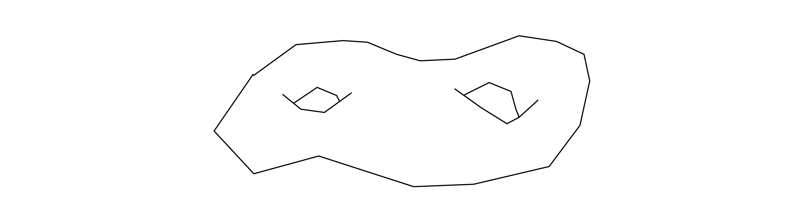
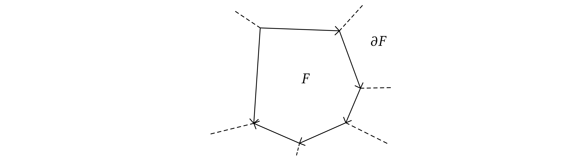

INI Seminar/Talk 20181003 T. Levy
2d Yang–Mills holonomy process
\(\Sigma\) a compact surface or \(\mathbb{R}^2\). We need areas, so we consider a volume form on \(\Sigma\). 
\(G\) a compact Lie group, connected. \(\mathfrak{g}\) a Lie algebra with scalar product \(\langle \cdot, \cdot \rangle\). Example \(G = U (N), \mathfrak{g}=\mathfrak{u} (N)\) and \(\langle X, Y \rangle = N\operatorname{Tr} (X^{\ast} Y)\). \(\mathcal{A}\) connections on the principal bundle \(P \approx \Omega \times G\).
\(L (\Sigma)\): continuous loops on \(\Sigma\) with finite length, up to re-param. (finite lenght is a diffeo invariant notion).
We want to describe a collection of \(G\)–valued random variables \((H_{\ell})_{\ell \in L (\Sigma)}\) such that their distribution is heuristically given by
This is a probability measure on (\(\mathfrak{g}\)–valued) \(1\)-forms on the manifold \(\Sigma\) which is invariant under certain transformations.
Multiplicativity
If \(\ell_1, \ell_2\) are two loops based on the same point then we must have
where \(\ell_1 \ell_2\) is the concatenation of the two loops and \(\ell^{- 1}\) is the loop run in opposite sense.
The curvature \(\Omega\) of the random connection is distributed like white noise. Since curvature controls the infinitesimal holonomies we should expect this to show up in \(H_{\ell}\).
We imagine: \((H_{\ell})_{\ell}\) is Brownian motion/bridge on \(G\) indexed by \(L (\Sigma)\) with the area playing the role of time.
Lattice Yang–Mills theory
(Finite dimensional marginals of the holonomy process)
We start from our surface \(\Sigma\) and discretize it by drawing a graph \(\mathbb{G}\) over it (e.g. a triangulation). It is a real embedded graph. \(\mathbb{G}= (\mathbb{V}, \mathbb{E}, \mathbb{F})\) where \(\mathbb{V}\) are points of the surface and \(\mathbb{E}\) which are edges embedded in the surface. Therefore it has faces \(\mathbb{F} \subset \Sigma\). (we assume orientation for each edge in \(\mathbb{E}\))
Configuration space \(\mathcal{C}_{\mathbb{G}} = G^{\mathbb{E}}\). Let \(c\) be a path in \(\mathbb{G}\), that is \(c = e_1^{\varepsilon_1} \cdots e_n^{\varepsilon_n}\): \(e_k \in \mathbb{E}\) and \(\varepsilon_k \in \{ \pm 1 \}\) an orientation. Then we consider the discrete holonomy
This is a discrete version of a connection. There is a natural probability measure on \(\mathcal{C}_{\mathbb{G}}\) by taking the product measure of Haar measure on \(G\). To make it more interesting we take the heat kernel on \(G\):
fundamental solution of the heat equation
It satisfies
Sengupta's formula (Migdal, Witten, Driver)

This expression has the advantage that it gives a consistent family of probability measures, namely it is invariant under subdivisions.
Consider two graphs, \(\mathbb{G}_2\) finer than \(\mathbb{G}_1\). We have a natural map \(\mathcal{C}_{\mathbb{G}_2} \rightarrow \mathcal{C}_{\mathbb{G}_1}\) by decimation which preserves the measure: \(\mu^{\mathbb{G}_2} \rightarrow \mu^{\mathbb{G}_1}\). Consider a face \(F\) of \(\mathbb{G}_1\) which is split in two in \(\mathbb{G}_2\) as in this figure:
Here \(e \in \mathbb{E}_2 \backslash\mathbb{E}_1\). Now \(h_{\partial F_1} (g) = a_3 a_2^{- 1} a_1 e\) and \(h_{\partial F_2} (g) = e^{- 1} a_6 a_5 a_4\), \(F = F_1 \cup F_2\) and \(h_{\partial F} (g) = a_3 a_2^{- 1} a_1 a_6 a_5 a_4\). The convolution of the heat–kernel allows for the following computation
This is the reason to use the heat kernel in the definition of \(\mu^{\mathbb{G}}\).
Theorem
Ilya Chevyrev has a recent preprint where he defines a space of distributional connections \(\mathcal{A}\) on which he is able to define a probability measures and holonomies whose law coincide with the holonomy process.
Example
so \(H_{\ell_1}, H_{\ell_2}\) are independent and distributed like the Brownian motion on \(G\) at time \(t_1\) and \(t_2\). If the two loops have non disjoint areas then we can write them as three loops \(a, b, c\) with disjoint areas of size \(s_1, s_2, s_3\) such that \(\ell_1 = a b\), \(\ell_2 = b c\) and now
Example
with \(Z_T = p_T (1)\). So now \((H_{\ell_1}, H_{\ell_2}) \xequal{d} (X_{t_1}, X_{t_1}^{- 1} X_{t_2})\) where \((X_t)_{t \in [0, T]}\) is a Brownian bridge on \(G\) conditioned to return to \(1\) at time \(T\).
The large N limit.
We consider expectations of Wilson's loops:
We are going to do some simple computations of numbers of this kind which reveal some combinatorical phenomena which will “resurface” also in MM equations.
Take \(G = U (N)\). \(\langle X, Y \rangle = N\operatorname{Tr} (X^{\ast} Y)\). \(\ell\) a loop of area \(t\) on \(\mathbb{R}^2\)
where \((U_t)_t\) is the Brownian motion on \(U (N)\). We use the notation \(\operatorname{tr} (M) =\operatorname{Tr} (M) / N\) (normalized trace) so that \(\operatorname{tr} (I_N) = 1\).
The BM on \(U (N)\) is given by an SDE. Take a linear Brownian motion \((K_t)_t\) on \(\mathfrak{u} (N)\) such that
Given this we can compute
so
Let us try to compute
In order to compute \(\mathbb{E} [\operatorname{tr} (U_t \mathrm{d} K_t U_t \mathrm{d} K_t)]\) we take an ONB \((X_k)_{k = 1, \ldots, N^2}\) of \(\mathfrak{u} (N)\) and we say that \(\mathrm{d} K_t = \sum_{k = 1}^{N^2} X_k \mathrm{d} B^{(k)}_t\). We therefore conclude that
We use now the following identity
which is proven by proving first that it does not depend on the basis and then using your preferred basis to do the computation.
| \(\displaystyle \frac{\mathrm{d}}{\mathrm{d} t} \mathbb{E} [\operatorname{tr} (U_t^2)] = -\mathbb{E} [\operatorname{tr} (U_t^2)] -\mathbb{E} [\operatorname{tr} (U_t)^2] . \) | (1) |
We are now going to evaluate with similar method \(\mathbb{E} [\operatorname{tr} (U_t)^2] .\)
and now use that
which gives a second equation:
| \(\displaystyle \frac{\mathrm{d}}{\mathrm{d} t} \mathbb{E} [\operatorname{tr} (U_t)^2] = -\mathbb{E} [\operatorname{tr} (U_t)^2] - \frac{1}{N^2} \mathbb{E} [\operatorname{tr} (U_t^2)] \) | (2) |
and (1) (2) form a system of ODEs which can be solved to give:
These relations express connections between unitary Brownian motions and the combinatorics of permutations and random walks in the symmetric group.
Take \(n \geqslant 1\) and a permutation \(\sigma \in S_n\) cycle lenghts \(n_1, \ldots, n_r\)
Then I claim that we have
where \(i \sim_{\sigma} j\) indicate when \(i, j\) are in the same cycle of \(\sigma\). Therefore, in principle, one can solve this huge family of equations and taking the \(N \rightarrow \infty\) limit one can prove the following theorem:
Theorem
Another theorem says:
Theorem
Makeenko–Migdal equation
This last theorem gives a sort of law of large numbers in which it plays a role the function
The MM equations give informations about \(\phi\). Take a loop \(\ell\), we want to compute \(\phi (\ell) .\) It depends on the combinatorial structure of the loop and the area of the faces it identifies
The MM equations tells us how this number changes when we distort the loop. Look at an intersection

Where \(\ell', \ell''\) are the loops obtained by removing the intersection as shown in the picture. The MM equations are known to be true on the plane and on the sphere and the finite \(N\) version are also known on certain surfaces (which?).
The value of \(\phi\) on a simple loop is \(\phi (\ell) = e^{- t / 2}\). Loops with one intersection point and disjoint areas give
A loop with on intersection point and one area inside the other (large area \(s\) and small area \(t\)). Call the value of
Then
When we change the area of the unbounded face we get
so we can solve and obtain
which give the limiting value we found before.